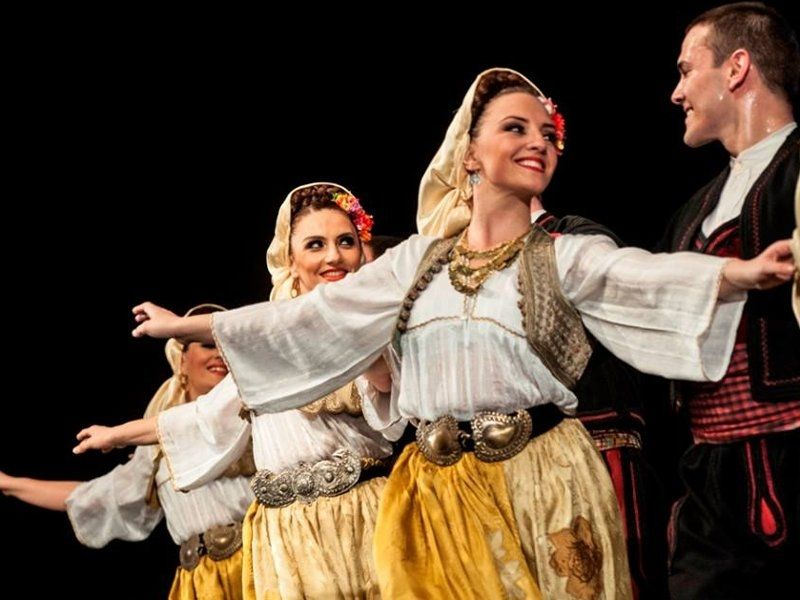

Serbian Traditional Dance
Dancing tradition in Serbia is represented by various styles of dances in the country. As with other aspects of Serbian culture, different forms of dances originated in different parts of Serbia, developed according to the local traditions and also acquired elements from other parts of the country.
Serbian folk dancing, kolo, includes many varieties. The most popular dances are Užičko kolo, and Moravac, while other popular dances include Kokonješte, Žikino kolo and Vranjanka.